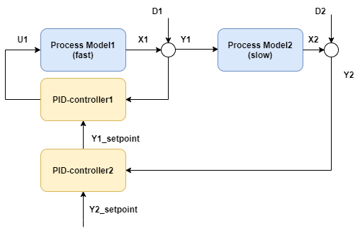

Cascade control
This example considers a cascade control scheme consisting of a rapid inner loop and a slower outer loop. In a real-world case, the inner loop could for instance be a (rapid) valve flow-rate controller, while the outer loop could for instance be a level that depends on the flow rate.

var processParameters1 = new DefaultProcessModelParameters
{
WasAbleToIdentify = true,
TimeConstant_s = 2,//rapid
ProcessGains = new double[] { 1.1 },
U0 = new double[] { 50 },
TimeDelay_s = 0,
Bias = 50
};
var processParameters2 = new DefaultProcessModelParameters
{
WasAbleToIdentify = true,
TimeConstant_s = 30,//slow
ProcessGains = new double[] { 0.9 },
U0 = new double[] { 50 },
TimeDelay_s = 5,
Bias = 50
};
var pidParameters1 = new PIDModelParameters()
{
Kp = 0.3,
Ti_s = 2 //rapid
};
var pidParameters2 = new PIDModelParameters()
{
Kp = 0.3,
Ti_s = 40 //slow
};
var processModel1
= new DefaultProcessModel(processParameters1, timeBase_s, "Process1");
var processModel2
= new DefaultProcessModel(processParameters2, timeBase_s, "Process2");
var pidModel1 = new PIDModel(pidParameters1, timeBase_s, "PID1");
var pidModel2 = new PIDModel(pidParameters2, timeBase_s, "PID2");
var sim = new ProcessSimulator(timeBase_s,
new List<ISimulatableModel> { processModel1, processModel2, pidModel1, pidModel2 });
sim.ConnectModels(processModel1, processModel2);
sim.ConnectModels(processModel1, pidModel1);
sim.ConnectModels(pidModel1, processModel1);
sim.ConnectModels(processModel2, pidModel2);
sim.ConnectModels(pidModel2, pidModel1,(int)PIDModelInputsIdx.Y_setpoint);
sim.AddSignal(pidModel2, SignalType.Setpoint_Yset, TimeSeriesCreator.Constant(50, N));
sim.AddSignal(processModel1, SignalType.Distubance_D, TimeSeriesCreator.Sinus(1,10,timeBase_s,N));
sim.AddSignal(processModel2, SignalType.Distubance_D, TimeSeriesCreator.Step(300, N, 0, 1));
var isOK = sim.Simulate(out var simResult);